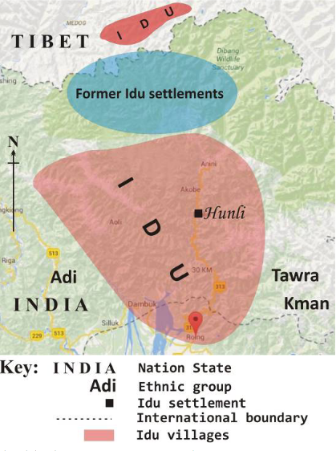
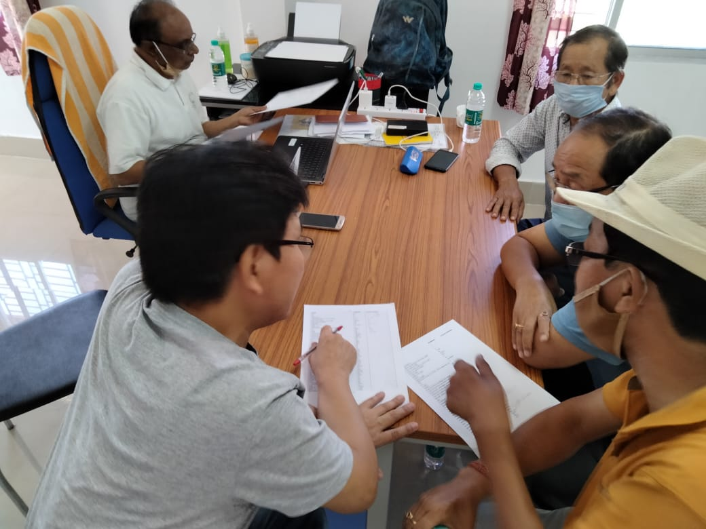
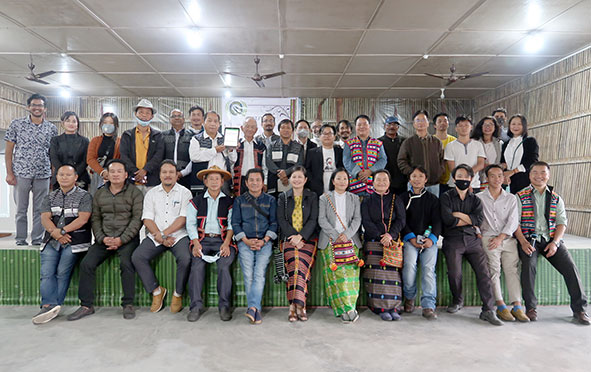

Language Revitalization: A case for Idu Mishmi
Akhilesh Kakolu Ramarao
Who am I?
“Who am I to blow against the wind?”
I am a Natural Language Processing Researcher, currently working as a Wissenschaftlicher Mitarbeiter at the Department of English Language and Linguistics, Heinrich Heine University.
I am non-Indigenous.
Staying centered around what matters
Indigenous people represent 5% of the world’s population, but they speak two-thirds of the world’s 7,000–7,500 spoken languages. Of those languages, about one-third are in some stage of language loss (Lewis and Simon 2016), and as many as 90% are predicted to fall silent by century’s end (UNESCO Ad Hoc Expert Group 2003).
Arunachal Pradesh is one of the linguistically richest and most diverse regions in all of Asia. In part due to this high diversity, a Hindi-based creole has been rapidly sweeping the state in recent years.
This has led to the sudden and in some cases severe endangerment of several of the state’s indigenous languages (Modi et. al, 2006).
Home
- Idu Mishmi is primarily used in Rural setting - Dibang Valley District of Arunachal Pradesh with some settlements in Lohit and E. Siang.
- However, the ‘Upper’ Idu (Luoba) live towards the Tibetan border and there are some villages in China (Sun 1983).
- Idu Mishmi belongs to Tibeto-Burman stock of Sino-Tibetan language family.
- The 1971 census recorded around 7700 individuals self-identifying as Idu Mishmi, although this is no measure of language competence.

Home (in real life)

Credits: https://alchetron.com/
Idu fam
 Credits: Onkar Pradhan
Credits: Onkar Pradhan
How it all began
- I was working as an Independent Researcher and was just drafting proposals after proposals to several indigenous communities in the Eastern-Himalayan Region.
- Thanks to Idu Mishmi Cultural and Literary Society (IMCLS) - the apex body of Idu Mishmi tribe for inviting to working on something
Little by little does the trick
“There is no language for which nothing at all can be done” - Joshua Fishman
A preliminary survey was conducted to assess the state of the language and how people of different age group really feel about using it.
The language is still spoken by a small group of older speakers within the community and the aim is to extend the use of the language into younger generations of speakers.
Several brainstorming sessions to obtain a long view of the revitalization process.
Adapting to a Modern World
Young speakers are the future of any language. If it survives, it will belong to them.
Linguistic descriptions were first developed and published only in 2020 by Roger Blench et al.
Idu Mishmi language movement started with adapting Devanagari script in 1980s. Only recently in 2020, an IPA based script was developed by Dr. Roger Blench et al.
There is no written literature available.
Audio and Video recordings of Death Rituals, Folk tales, Marriage Ceremonies and other personal stories are available.
An interesting book about textiles that describes the design patterns in their traditional clothing is available too!
A few more findings..
From the survey and personal experience it was clear that internet connectivity is very sparse but a lot of people owned smartphones.
So many Vloggers and K-Pop fans!
People in their 20s (and below) and a few in their 30s can’t talk fluent Idu Mishmi.
There are no higher education (above diploma) colleges in the area.
Origin of E-dictionary
- Primarily we set out to address the youth and children through technology for language learning.
- Dictionaries are of great help in learning a language.
- The ground work was done by Dr. Roger Blench team in procuring the Idu words in IPA-based script. We converted them to Roman and revalidated.

Offline Dictionary App
What?
- An offline English to Mishmi (Idu) android application built using Flutter.
- The dictionary has a total of ~1300 words.
For Whom?
- The youth of the Mishmi (Idu) community
- Native speakers of Mishmi (Idu)
- Mishmi (Idu) language enthusiasts
Features
- Use without internet connection!
- Fuzzy search – find a word even if you don’t know exactly how it is spelled
- Audio support
- Provide Feedback
e-Reader app
- Android application again built using Flutter for reading ebooks in Mishmi (Idu) language.
- Works without internet!
- User can store a large number of e-books in this application.
- Easy navigation and user-friendly reading layout.

The Idu Team

Idu Mishmi community now…
- has a Youtube channel for language learning.
- has 2 new children textbooks for grade 3 and grade 4.
- over 60 children books in Idu Mishmi.
- has a new script that’s more accurate.
- has around 30-40 active volunteers.
- recently secured funds for translating 200 children books and to build a read-along e-reader android application.
dream
I look forward to a day when every Indigenous child is able to study in their own language and most importantly grow up speaking their language.
Get in touch!
akki.kr94@gmail.com or kakolura@hhu.de
More about me: https://akkikek.xyz/about/
Link to slides: https://akkikek.xyz/presentations/tacos.html